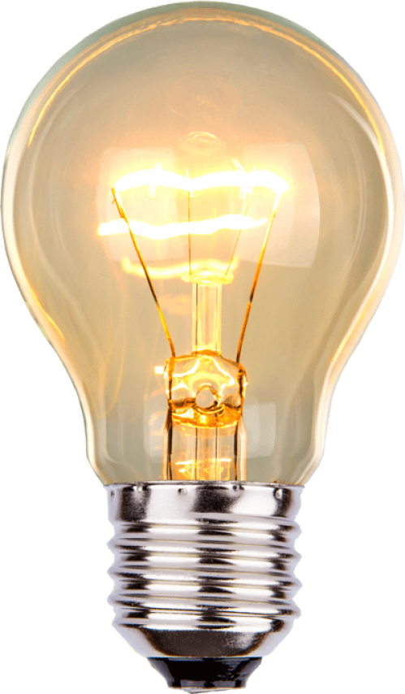
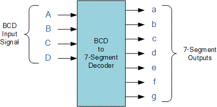
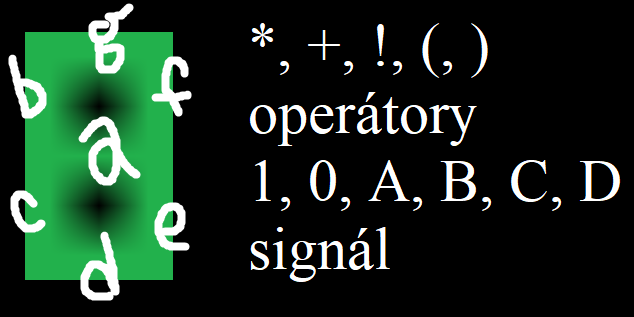

dummy

Popis
Podstatou Digihry je pomocou bitwise AND(*), OR(+), NOT(!) a za pomoci zátvoriek uviť sieť zodpovedajúcu zelenej časti obrázka hore - zo vstupov A,B,C,D, 1 aj 0. Žltá časť má ľubovoľný výsledok. Stránka pri šírke zobrazenia menej ako 1024px nadobudne responzívne mobilné prvky. Drag and drop je implementovaný v žiarovke, ktorá pristátím na input zaznačí správnu odpoveď jedného segmentu ako nápovedu. Hra funguje vynikajúco na mobiloch. Práca s XML je robustne implementovaná a resetuje celú inak náhodnú zapamätanú dráhu iba ak sa pohlo s počtom prvkov v XML či sa riadne prešlo 10 levelov. Cookies fungujú ako majú, úlohy sa striedajú ako majú, tlačidlo Riešenie hneď vyrieši súčasnú úlohu. Popis a návod pri tlači nie je snímaný ani s menu ani s hernou plochou.


Návod
Vzorce sa majú zostavovať z toho čo je na obrázku a zadávajú sa k príslušnému segmentu do textového poľa, ktorý tak zostrojujeme. ! ekviv. "not ", A,B,C,D ekviv. a,b,c,d. Segment, čo svieti skoro vždy sa lepšie definuje tým kedy nesvieti ako kedy svieti. Opak platí o opaku. Existujú ťažkopádnejšie aj minimálne tie isté správne riešenia. Je ich nekonečno.
segment g z hebrejky: (!A*!B*!C*!D)+(!A*!B*!C*D)+(!A*!B*C*!D)